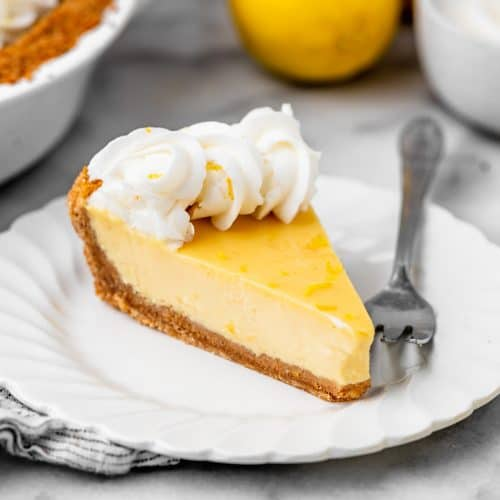

Lemon Pie originates from Philadelphia it considered as a southern confection but depending on the lemon pie it could be from mutiple different places. For example in 1847 someone in the United States published a cook book showing how to make a lemon pie with meringue inside of it. The pie crust was believed to be invented by the Ancient Greeks in the 5th Century BC. The pie in general was invented by Ancient Egyptians, well they were close the dish we have today. Everyone adds there own touch the desert or even trying to remake it. There is also Key lime pie which is the same idea of the Pie de Limon I will show you today they are very similar but they both have different types of ingredients.
Laura. Lemon pie. joyfoodsunshine.com
The first thing that you will need to do is mix the butter with the Galletas Marias with your hands. Then you would grab you pie plate or bakeware and mold the mixture of Galletas Marias and butter into the crust of the pie. It should be like a cookie like texture and is moldable. Make sure the crust is not so thin that it just breaks or to thick becuase it will affect the cooking of the crust. Then after that you move on to the second step.
You will need a blender for this step or even mixer could work. Then you put all of the ingredients for the pie filling into the blender for about 2 minutes. Then after that you make sure to taste it to see if it is sweet enough or maybe add more lemon or leche condensada. After doing all that then you would put it in the pie plate if bakeware were the crust is and put it in the oven. The oven is at 350 degrees Farenheit and the pie will take about 25-30 minutes to cook. You could also check with a fork or toothpick to see if it ready so if there is stuff on the fork when you checked it then it is not ready if the fork comes out clean then its ready. After that you could let it cool down and it would be ready to eat.
Maria Lett. Lemon pie. 2019. https://www.youtube.com/watch?v=-EKNoTAZBXU Lemon pie. https://ebenezermaxwellmansion.org/lemon-pie/, A shortcrust history of pies. https://www.bbc.co.uk/bitesize/articles/zmtn2sg